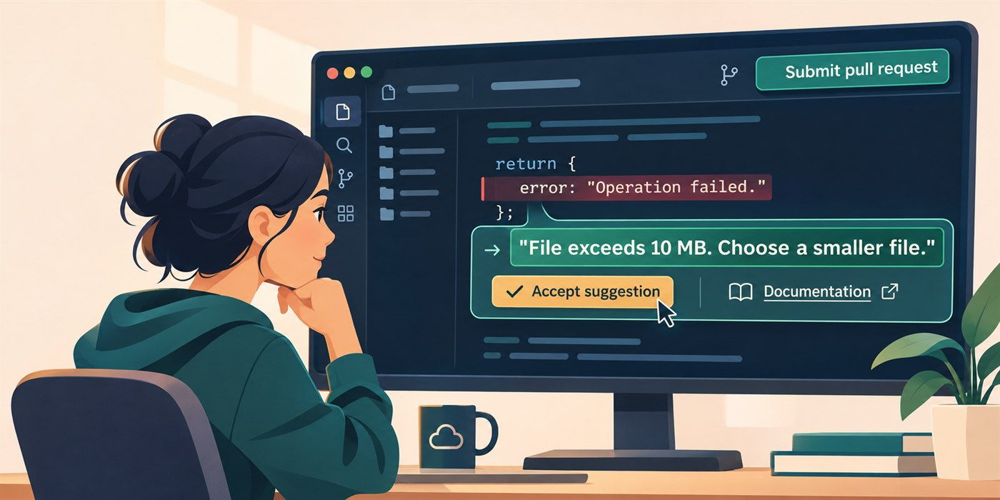

03 — AI PRODUCT CASE STUDY
Error Message Quality Agent
Built an AI tool that helps cloud engineers write clear, actionable error messages before release. It identifies writing and security issues, suggests a rewrite grounded in product documentation, and gives the author a rationale to review.

THE CONTEXT
It All Started When...
A message like “Operation failed” tells a customer almost nothing about how to recover. Writing guidelines existed, but they were applied unevenly and often late in review. Teams needed feedback while an engineer could still improve the message in the same pull request.
PRODUCT OWNERSHIP
Harpreet's Role
- PRD & evaluation specs: Turned writing guidance into a quality rubric, recovery criteria, and independent security checks.
- Cross-functional collaboration & stakeholder management: Aligned content designers, service teams, support, and engineering on integrations and readiness.
- Kanban board & backlog prioritization: Sequenced editor, chat, review, and release-check integrations alongside robustness testing.
- Retrospective & iteration planning: Used score comparisons and independent evaluation findings to prioritize follow-up improvements.
WHAT CHANGED
Results
- Built one evaluation service that scores messages, pinpoints missing guidance or sensitive details, and checks suggested rewrites against the same rubric.
- Designed the service for reuse in the editor, assistant chat, code review, and release checks. Engineers review and approve any rewrite before it enters the codebase.
- Defined how to measure whether engineers keep suggested wording and whether earlier feedback reduces message-related pull-request rework.
ILLUSTRATIVE OUTCOMES
Measurement example
Comparison-adjusted figures are estimates.
- 450 of 600eligible pull requests assisted over eight weeks (75%); 360 merged pull requests retained AI-assisted wording.
- 54 pull requestsestimated to have avoided message rework after comparison adjustments.
- 66 hoursestimated net engineering time saved after comparison adjustments.
EXPLORE THE FULL PROJECT
Want the complete case study?
Email me for the complete case study and program materials.
Email for the complete case study